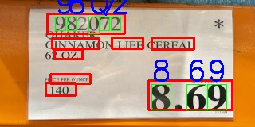

App Development Blog
Building Budgie: A 5-Month App Development Challenge
Ethan Alvi
A telling of my experience creating a budget app with two other developers.
The Beginning (6/7/2024)
The Premise
Hello and welcome! I’m Ethan Alvi, a computer science student at Full Sail University with two other students, Saul Gerda, and Steven Alexander. Our school has challenged us to plan, develop, and ship a software application in the span of 5 months. We get to decide together on what application to make and how we’ll go about doing it. And the purpose of this blog is to display the whole process! I’ll talk about the ups and downs, the challenges, and the triumphs as we go on our journey to develop our app.
Some reasons I'm excited to build this app include: 1. I get experience in app development. 2. I get to make something people can actually use. 3. I get another project for my portfolio. There's many ways this project can fail, but luckily, we have an instructor, Rebecca Carroll, to help us succeed with this undertaking. She oversees the project, provides resources, and gives us deadlines to help keep us on track for our 5-month goal. She pretty much acts like a producer for our team. With her help, I believe we can make a successful app.
The App
The first step is to decide what we’ll be making. After some deliberation, our team decided to make a shopping budgeting app called Budgie. It keeps track of the price of all the items in your shopping cart so you know if you’re over budget before you checkout. We liked this idea because we knew it would be useful for people like us. The thought of making something we would actually use really pushed us forward with this idea. We pitched it to our instructor and got the green light, so this will officially be our project! If you’re interested, you can see our pitch presentation slides here.
What's Next
So now, we’ll design the app and research the technologies we need to make it. I will share our progress here on my blog weekly until we finally ship our app! I’m excited to work on this project. Stay tuned to see what's next!
Unifying the Team (6/14/2024)
Designing the App
We are making great progress! This week, we created a Design Document and Style Tile describing every design detail and feature we plan to make (except for the specific layouts we'll get down next week). I believe it's a good idea to really nail down the design details in the beginning to make sure we know what we're making. Our teamwork has been good so far; everyone is volunteering to take on tasks, and the work is being split evenly. We each get along well, and I think we'll make a great team! You can see our current version of the Design Document here, and below is our Style Tile.

Problem: Differing Visions for the App
One problem we faced this week was that we had a slightly different vision for the app. We had assumed we were all on the same page during our discussions, but in reality, we discovered we were each thinking of different features and menu systems for the app. Some of us weren't so attached to our original ideas and easily adopted new ones, but others were a little more attached. To be fair, I was one of those people, especially because I like to optimize everything, and it's hard to go with something that feels less so.
Solution: Listen and Communicate
Luckily enough, we were able to come to a solution. I knew we needed to be unified and come to a consensus on what we wanted. So I addressed it as soon as something came up. We simply talked to each other about it and managed to come to a general consensus. It never turned into a big argument. As I think back on our conversations, I can pick out some key principles that were in play that helped to resolve our conflicts successfully:
- Listen to what the others had to say. Be humble enough to admit the possibility that someone else's idea might be better for the project.
- Communicate your goals for the app and why you wanted your idea. Be open and honest, as not everyone might know where you're coming from.
- Decide what is better together, and be objective about it. Be willing to put aside your own preferences for the preferences of your user base (the app is for them, not just you).
Communicate your personal goals for the app. Try to come to an understanding. Align your goals and join forces. I believe many conflicts can be resolved this way. For us, we decided we needed to let users test the app first before we could say which idea was better for the users. It’s hard to predict what the users will do before you see them in action. In the end, I'm glad we could resolve our conflicts quite nicely, and I hope to continue to resolve our disputes this way.
Scaling the Project to Scope (6/22/2024)
Problem: Is This Feature Too Ambitious?
One of the main features of Budgie, our app, is that you can take a picture of a price label at the store and it will automatically fill in the price of the item for you. To make this work, we will need an OCR (Optical Character Recognition) library, which performs the complicated work of programmatically making out the numbers and characters shown in the picture. There are a good number of available OCR libraries out there, but I was really interested in making my own. Our producer liked the idea but wanted to know if it was too out of scope for our 5-month development period. I honestly couldn’t answer that question. Apart from some experience with machine learning, I had no idea how to make an OCR. This leads to my problem: how could I know if making an OCR would be too difficult?
Solution: Research and Ask Experienced Developers
One way to find out was to talk to someone who knows what it’s like to make an OCR. I decided to email my machine learning professor, Brandon Patterson, about what he thought since he has experience on the subject and knows my current level of knowledge. While I waited for his reply, I did some online research to find out what it would take. I found a helpful post on Quora about someone describing how he made an OCR from scratch. He said it took him “almost 2-3 days of consistent efforts and research” to make it, with regular updates (Atharva Hudlikar, https://qr.ae/pszcMT). Another individual posted that they had worked on theirs “for several years” to make it efficient (Loic Aigon, https://qr.ae/pszcgj). By then, Brandon emailed back and said the hardest part would be the image processing, which he wasn’t familiar with so he couldn’t say how difficult it’d be.
I decided I would have to get more familiar with the process of developing an OCR to actually make a decision. As I researched online, I realized that how-to tutorials helped me the most because I could visualize in code what the process would look like.
After a few hours of research, I felt confident that I could make an OCR in the time frame, just not from scratch. I told my producer that there are plenty of helpful libraries I can use that will still allow me to fine-tune the OCR for our app, like OpenCV and ML.NET. And of course, if it turns out that making an OCR is too much after all, then we can always use an existing one. I’m glad I did this research because it has only made me more excited to start developing this app!
Communicating With the Team (6/29/2024)
Problem: Not Communicating Effectively
Our team is doing well, although one issue has come up: communication. The main thing is that I knew Saul well, and I knew Steven well, but Saul and Steven don’t know each other well. So, knowing they were more comfortable sharing their ideas with me, I started acting like the team’s communications facilitator: I would sometimes talk one on one with them about the project and get everyone’s ideas out that way. I talked with Steven about some issues with the UI, and he had some good ideas, and we came to a consensus on what we wanted. Later, I talked to Saul about the solution, but he had something else in mind that he wanted to try instead. There are a million different ways to do UI, and I wasn't married to our solution, so I was totally fine changing it.
We decided to move forward with the new idea, but then I forgot to tell Steven about it the next time I saw him, so when the issue came up in conversation, they were both under the impression that the other was going off script. Not only that, but they were both passionate about their ideas, which only amplified the conflict. This happened with a few topics just this past week. This, along with some other factors, led to the two having some very heated discussions. I explained my part of the story, and that it was partly my fault, which helped a little bit, but still didn’t resolve the conflict. I was determined to make things better, so I wracked my brain on how to approach this issue.
Solution: Become a Better Team Member
I had thought about the issue over the next few days, and I honestly didn’t know how to improve the team’s relationship. There were still some project concerns we had to resolve, and in my head, it seemed like a balancing act to do that while avoiding any arguments. The next time we all met, I was pleasantly surprised to see that the two team members used much more considerate language with each other this time and were able to work out most of the issues. This was a huge relief, and to be honest, made me realize I was inflating the problem a bit in my head, and I wasn’t giving them as much credit as they deserved. They learned to communicate and work with each other.
And that’s the lesson I learned from all this. You could say that I could’ve prevented this if I kept everyone in the loop, which is true, but mistakes are bound to happen eventually with that team communication dynamic. While I wanted to make things easier for the team, I shouldn’t have tried to be the messenger boy for communicating ideas for the project. The better way is to raise the team up to a place where we can all communicate, and that could mean there's some conflict on the way there. But the place we reach is definitely worth it. I believe we all can learn to become better team members, and I believe this project is a great opportunity to do so.
Choosing the Right AI Framework (7/8/2024)
Problem: What AI Framework is Best?
This week, it was time for me to research how exactly to make our OCR. I had initially chosen to use ML.NET instead of the typical Python because I wanted to learn something new and it’s under the .NET framework, which is what we’re using to develop our app (.NET MAUI). However, as I started my research, some things made me reconsider that. First, ML.NET does not support neural networks natively; I would have to import a pretrained model and fine-tune it with my specific data. This is not terrible, but I was hoping to build my own neural network to learn more about how it works. Second, ML.NET will have trouble running models on Android because of processing constraints. To fix this, I would have to run a server to host my model and access it via HTTP request. These things don’t make using ML.NET impossible, but, are the benefits of using ML.NET worth the costs? Is there another language that’s more suited for our project?
Solution: Research With a Focus on Our Project Needs
This was a hard question to answer because I didn’t know the pros and cons of the other programming languages, neither did I know what other options I had. To fix that, I did some online research. According to some articles I found, there are plenty of options, including C++, Java, Javascript, and Go. Julia stuck out to me because it “offers near C-level performance” while keeping a simple syntax. Python also stuck out as an option because of its “ease of learning and use” and “robust community support.” (anurag702, https://www.geeksforgeeks.org/best-language-for-machine-learning/).
While it’d be fun to learn a new language, I think Python will be the best fit for this project. After looking for code examples, I found that Julia had few results and little documentation on the subject. As beginners in deep learning, it’s important to have good documentation and online support to learn and to troubleshoot our code. That’s why I ultimately chose Python for our project. It was also a good decision because we ended up switching from .NET MAUI to Android Studio anyway, which suits Python well. I’m glad we figured this out now rather than in the middle of development!
Improving Jira Tasks (7/13/2024)
Problem: Poorly Planned Jira Tasks
This week marked the start of the second month of the project, which means we finished our planning phase and are now focusing on the programming phase. Our producer helped us set up a Jira board to break down our project into manageable tasks and assign them to people. Every week, we will create tasks for ourselves, and Rebecca (our producer) will hold a build review meeting where we will showcase the tasks we’ve done.
This week, I assigned myself the task of building and training the OCR model, along with some other smaller tasks. However, building and training the model took me a lot more time than I thought. As I kept working, more and more work appeared. Since I was a beginner, I made a practice model that predicts types of penguins to learn how to use TensorFlow. There were some unexpected errors and a lot of time figuring out how to use the TextOCR dataset. The chances of me finishing it before build review were starting to look slim. I wanted to do what I promised, so I tried as hard as I could, but unfortunately, I just couldn’t do it in time. I presented what I had during build review, and Rebecca, our producer, was gracious enough to give me full credit for it still.
So, where was the problem? What can I do to avoid this from happening in the future?
Solution: Break Down Tasks and Allot More Time
Rebecca had mentioned the task was too broad, and I agree. If I had broken down the task into smaller pieces, I would have better understood the actual size of that task. I also didn’t think about what it would take to learn what I didn’t know. After all, I spent a good day learning how TensorFlow works. After build review, I started planning my next tasks, and this time, I really thought about how I should change my process. This is what I came up with:
- Identify the next tasks to be done
- Break those tasks into smaller parts until you understand how long it will take
- Assign times for each task. Consider what may go wrong and add time accordingly
- Choose the tasks you will do for the week
This will certainly help me to choose my tasks more wisely and to feel more confident that I will complete them. I’m sure there will still be unexpected things that come up, but I can always talk to the producer and maybe change the task if seems unreasonable.
Working with Tensors (7/21/2024)
Problem: Getting the Stored Value of an Unresolved Tensor
This week, I worked on building and training the OCR model using TensorFlow. TensorFlow makes neural networks way easier for me, but it still takes some time to learn, and I still encounter errors as I try to use it. For example, one of the biggest errors I had this week looked simple on the surface. As I tried to write the encode function used for each sample of the dataset, I encountered a conversion type error from tensor object to string. Since I needed that conversion to construct the file path to the image dataset, I looked up ways to make this conversion. According to this GitHub issue page, TensorFlow doesn’t support that kind of conversion because the tensor’s value isn’t determined until TensorFlow’s compute graph needs it (lazy evaluation). That meant I needed to get creative.
Solution: Address (use py_function) or Avoid (approach differently)
Luckily enough, I’m not the only one who encountered this issue, and TensorFlow has a function called ‘py_function’ to work around it. It essentially works as a wrapper to your function that will evaluate the tensors for you to retrieve their value. This works great, but I wasn’t familiar with how to use it with my dataset. After attempting to implement it, I found it difficult to test to know that it works. I didn’t want to move forward with code that I wasn’t comfortable with, especially as a beginner with TensorFlow, so I decided to do something else. This time, I found a way to remove the need to make the tensor-to-string conversion entirely. Instead of constructing the file path to the image during the encoding stage, I would do it before in the preprocessing stage, and use the path to the image as an input.
While part of me feels unsatisfied with sidestepping the problem, the code itself feels cleaner this way, and more importantly, I know that it’ll work, which may save a lot of time for me in the long run. I imagine sidestepping is common in the workplace in cases where it’s more efficient to do so, but I'll try not to make it my default. I’m grateful I was able to solve this problem and hope to find more solutions in the future.
Choosing the Best OCR Design (7/26/2024)
Problem: Should I Switch From Word to Character Recognition?
This week, my goal was to have the model finally able to predict the text on an image. I just needed to train the model on the data, and I could analyze how well it worked. However, when I started training the model, an error came up. The label data needed to be all the same length, and the words I was using were of various sizes. This meant I needed to pad each of the words with dummy characters so they all were the same length. It would look something like this:
However, I encountered some errors as I tried to implement this, and It was hard to debug TensorFlow without doing a lot of research. Interestingly enough, I found another design online for the OCR model. Instead of guessing the words on the image, it would guess the characters, which would bypass the padding problem I’m running into. Since time was running short, switching to this design was tempting. I needed to decide, should I make the switch?
Solution: Is It Better and Can I Do It?
To make the decision, I needed to learn more about the pros and cons of using character recognition as opposed to word recognition. I asked ChatGPT for a quick overview, and I found a lot of interesting points. Word-based recognition could have trouble predicting words it wasn’t trained on. That was concerning for me since our model is meant for prices, and the dataset didn’t contain many numbers, and even fewer price tags. Character-based recognition, on the other hand, could just use a font dataset and predict the numbers individually. Although it can’t use surrounding characters as context clues to determine what the current character is, since I’m dealing with prices, that wouldn’t help too much anyway.
It sounded like character-based recognition would be a better model for our app, but before I decided to build it, I wanted to make sure I could. So, I tried to find all the necessary resources I would need, like the dataset, a method to isolate characters in an image, and online references, which was easier than I expected. With that, I felt confident that I could build the model quickly enough, so I decided to switch to the character-based model. I finished it just in time for our build review, and it worked great! I'm glad I made the switch. The model is predicting the characters accurately, and now I’m close to finally implementing it on our app!
Handling Bad Data (8/17/2024)
Problem: What is Keeping the OCR Model from Recognizing Decimal Points?
I finally have our OCR model trained, and it has worked really well so far. However, I noticed that it failed to recognize the decimal points, which made me realize that the character dataset didn’t have any decimal points or other symbols in it at all! So, I researched and found a font dataset that holds the characters of over 150 fonts, including all the symbols I needed the model to recognize. Perfect! However, when training the model on this dataset, it performed worse. How could this be? And can I fix it?
Solution: Verify the Dataset is Sound
The only significant thing I changed about the model was the dataset, so I started searching there. I displayed the images of each character, and I found something I didn’t expect!
The font characters were stretched to fit the 20x20 pixel format of the dataset. Looking at the image of a ‘1’, I can understand why the model got it confused with a decimal point. I didn’t have their original sizes to reverse the resizing, so I would have to think of another way to solve this issue
I ultimately decided to use the old dataset I had and only use the new one for the symbol data. After testing it out, to my dismay, the model still couldn’t recognize the decimal point. It thought it was a dollar symbol, which made me question the dataset. Looking at the data, I realized the issue.

The decimal images weren’t filling up the entire space like I expected. This was probably the underlying cause of the issue. So ultimately, I decided to make a couple dozen decimal point images myself for the dataset, which wasn’t too hard, since they’re basically circles/squares.
Custom made decimal points sample. I varied the spacing for more accurate results.
I duplicated the images to have around 500 to avoid class balance issues. After that, the model finally could recognize the decimal point images, and the results were exactly what I wanted! After all that, I’m happy to finally get the OCR model where I want it to be, and I am excited to start using it on price labels!
Improving Text Detection (8/24/2024)
Problem: How to Improve OpenCV East Text Detector?
This week, I finally started putting all the OCR components together, including detecting the text, separating the characters, and guessing what each character is. Here are some of the results after creating this pipeline:

So, as you can see, the results aren’t perfect. The character separation and recognition steps look to be working well enough, but the text detection step isn’t quite working how we want it. It’s either detecting parts of the price or not at all. What could be causing the issue, and how can we fix this?
Solution: Image Preprocessing
Our text detection is accomplished using OpenCV’s East Text Detector, which may not be optimized for our label-reading purposes. I could train the East Detection model on custom data to make it more accurate or replace it completely. Both are valid options, but time-consuming. What if I try modifying the input image to see if it produces better results?
I suggest this because I have seen the East Text Detector produce different results based on the size and quality of the image. I’m hoping that if I shrink the input image, it will be able to identify the larger-sized price. Here are the results:
Looks like it definitely helped! It's missing a lot of the surrounding text, but we don't really care about that; it's the main price that matters. I tried various sizes, and a width of 320px worked the best. While this helped a lot, it still didn’t quite read some prices on images like these:
For these types of images, we’ll have to find other solutions. I’ll move forward for now since these are less likely to happen, but I plan to revisit these issues eventually.
Meeting App Specifications (9/14/2024)
Problem: How to Meet Hosting Service Specifications?
Now that the OCR program worked well enough to detect the price from an image, I decided to package it up as an API and host it on a web service so I could make calls to it via HTTP requests from our app. However, as I was looking for web services, I realized there were free-tier limitations that our API didn’t meet. I didn’t want to spend any money to host the API, so I looked for the best options online, eventually landing on PythonAnywhere. There were still some specifications the API didn’t meet: PythonAnywhere only supports WSGI applications and uses an older version of Python (Python 3.10). The API is an ASGI application and uses Python 3.12, which is required for the OCR to work properly. Can I resolve these issues? And how?
Solution: Refactor API and Model
If I can change the API to meet these specifications, then PythonAnywhere will work great for our hosting service. The first problem was that the API wasn’t the right type of API. It needs to be WSGI (synchronous) and not ASGI (asynchronous). Can I change that? Yes, I can switch the framework from FastAPI (ASGI) to Flask (WSGI). I chose ASGI to begin with because handling multiple requests at the same time would be nice if the app became popular, but since I have zero budget, WSGI will do just fine for now. Making the switch was simple.
The second problem was that PythonAnywhere runs its services using Python 3.10, which crashes the API when it tries to import my OCR model since it was made with the TensorFlow library for Python 3.12. I tried to update the Python version on PythonAnywhere, but it failed since it would go over the maximum allotted disk space for my project.
So, the only other option was to downgrade my OCR model so it would work on PythonAnywhere. I created a virtual environment with Python 3.10, where I ran the code that builds the OCR model and exports it as a .keras file. It worked with the lower version of TensorFlow, and after uploading it to PythonAnywhere, the API ran like a charm!
Getting the API to work on a free hosting platform took a lot longer than I thought, but I’m glad I found a solution. It made me realize that it’s worth researching the limitations you have to work with before you start programming.
Creating User Tests (9/28/2024)
Problem: How Do I Create Good User Tests?
This week, we have finally put together all the essential pieces of the app, and Budgie is officially in the Alpha stage! That means it’s time to perform some user tests on the app. In true Agile project management, we conduct user tests all throughout development, but since we are only students and our resources are limited, we’re doing our tests just once now. Now that the time has arrived though, I’m not sure what kind of tests our testers should perform. I don’t want to pick some random tests, I want to make the most out of the testers we have. So, how can I come up with good tests for our app?
Solution: Remember What User Tests Are For
First, I need to remember why we perform tests. We conduct user tests to know how users will react to the app. This is very valuable to know so we can make the best app possible for the user.
Second, I need to know what parts of the app need testing. So, I got the team together and we discussed what areas of the app we’re not sure about and would like to have users test. For example, I didn’t know how easily a user would handle a situation where the OCR couldn’t read the price correctly, and if they would be confused about what to do next. We created a list of other scenarios we would like to test for.
- Navigating from the Home page to other pages
- Creating budgets and adding items
- Creating a new account
- Utilizing the label scanning feature
- Handling a failed scan
We also weren’t sure if the sure if the user would like the design or if the user would even want an app like this. So we decided not only to perform think-aloud tests but also to provide a survey for the users to get their opinions afterward. Steven volunteered to write the think-aloud test scenarios as well as create the survey. I think he did a great job! You can find the scenarios here.
I’m glad I took the extra time to create effective ideas for user tests, and I believe we’ll get a lot more valuable data from our tests because of our efforts!
Implementing Callbacks (10/19/2024)
Problem: How Do I Pass a Function to Another Class?
Our app is entering its final stages of development! We’re now adding changes to the app based on the results from our user testing. We had gotten a lot of good feedback.
During the tests, we noticed that people were having trouble accessing the price scanning feature from the camera, so we decided to make an obvious button that would additionally add a new item to your budget with the price you got.
I was assigned to add this feature, and as I was coding, I ran into an issue. I need to run the addNewItem function that’s in the ItemListActivity class, but it needs to be ran several layers deep in that class in another class called PostProcessActivity. I can’t just copy the same code because the ItemListActivity class has essential information, variables, and objects that the function needs to work correctly. What can I do to solve this issue?
Solution: Use Callbacks!
There are multiple ways I could handle this. I could reorganize the code so it’s all one class, but that would be too messy and not friendly in an object-oriented environment. So, if the classes must be separate, the only other option is to use callbacks. Essentially, a callback is a pre-defined list of instructions you refer back to when you are done with a process. This can help with our problem if the ItemListActivity class defines this list of instructions in an object, passes it along to the PostProcessActivity class, and have it run those instructions when it needs to. This is the typical design pattern for callbacks in Java. This way, it carries all the values it needs from ItemListActivity, and it can run in the PostProcessActivity class.
However, when I went to implement it, I realized that Android Activities don’t work the same way normal classes do; they have special functions that start and finish them. So, I actually have to change my approach to a system that Activities implement called onActivityResult. When an activity finishes, it can return any important data and run the list of instructions there. After realizing this, I was able to fix the problem, and even improved the code for our functions.